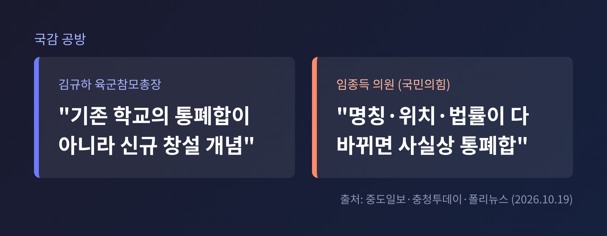
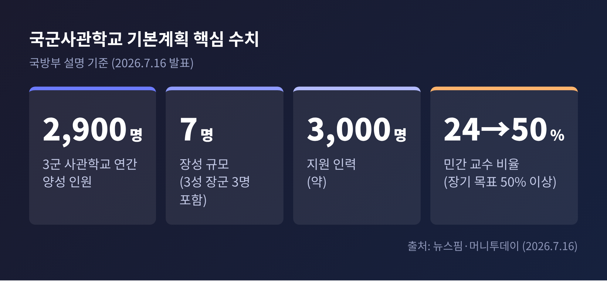
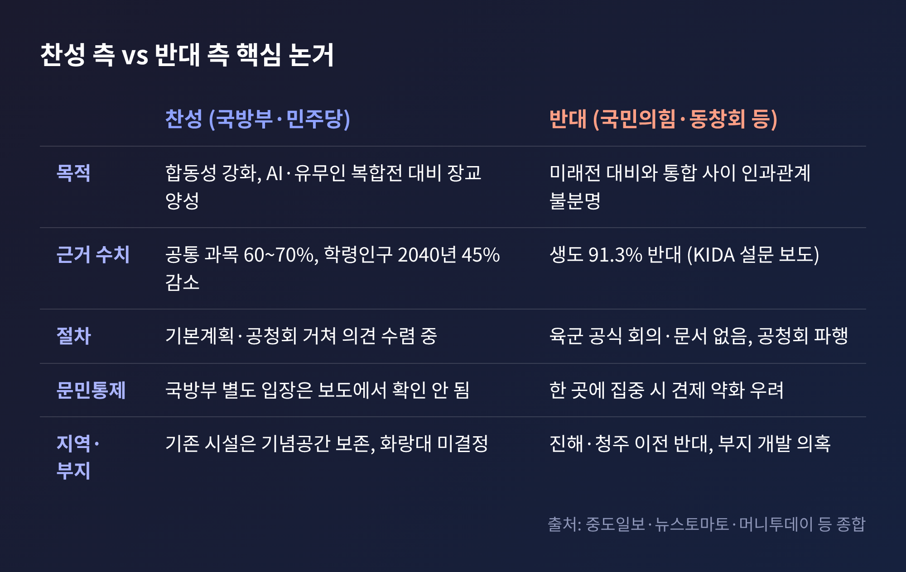
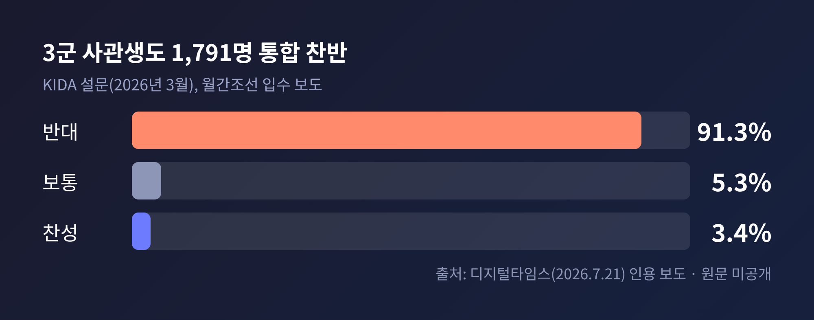
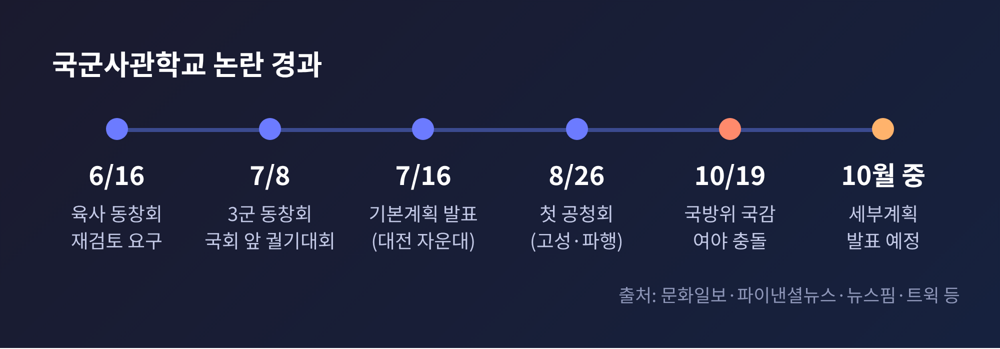

오늘은 국군사관학교 통합 논란을 정리해 보려 합니다.
10월 19일 국정감사에서 불거진 여야 공방을 중심으로, 계획의 내용과 양측 논거를 차례로 살펴보겠습니다.
10월 19일, 국회 국방위원회는 충남 계룡대에서 육군본부 국정감사를 열었습니다.
이날 가장 뜨거운 쟁점은 육·해·공 3군 사관학교를 대전 자운대의 단일 '국군사관학교'로 합친다는 정부 계획이었습니다.
국민의힘 임종득 의원은 "졸속 추진"이라고 비판했습니다.
정책회의나 지휘관회의 같은 공식 절차 없이 결론을 정해놓고 밀어붙였다는 주장입니다.
육군 차원의 공식 회의나 문서가 있었느냐는 질의에 김규하 육군참모총장은 "없다"고 답했습니다. 국방부 태스크포스가 육군본부를 찾아 기본 방향을 협의한 정도라는 설명이었습니다.
김 총장은 통합의 목적에는 공감한다는 입장을 밝혔습니다.
"미래의 대한민국을 잘 지키기 위한" 것이며, 기존 학교의 통폐합이 아니라 "신규 창설 개념"이라고 했습니다.
다만 방법과 수단에는 더 많은 의견 수렴과 절차 보완이 필요하다고 덧붙였습니다.
임 의원은 이 표현을 받아들이지 않았습니다.
명칭, 위치, 근거 법률이 모두 바뀌는데 '창설'이라 부르는 것은 말장난이라는 지적입니다.

사관학교는 장교단의 출발점입니다.
어떤 교육을 받고 어떤 동기들과 생활하느냐가 군의 문화와 작전 방식에 오래 영향을 미칩니다.
그래서 통합 여부는 교육 제도 문제를 넘어 군의 합동성, 문민통제, 지역 균형발전, 예산이 모두 얽힌 사안입니다.
시간표도 가깝습니다.
더불어민주당은 설치법 처리와 2027년도 예산 반영을 추진하겠다고 밝혔고, 국방부는 10월쯤 세부계획을 내놓겠다고 했습니다.
논쟁이 길어질수록 입법과 예산 심사에서 충돌이 되풀이될 가능성이 큽니다.
국방부는 7월 16일 '국군사관학교 창설 기본계획'을 발표했습니다.
위치는 대전 자운대입니다. 육군대학, 해군대학, 공군대학, 합동군사대학이 모여 있는 곳입니다.
국방부가 제시한 현황 수치는 다음과 같습니다.
현재 3군 사관학교는 각각 700~1,000명을 선발하고, 합쳐서 연간 약 2,900명을 양성합니다.
이를 유지하는 데 3성 장군 3명을 포함한 장성 7명과 지원 인력 약 3,000명이 투입됩니다.
국방부는 학생 수에 비해 지휘·지원 구조가 과다하다고 설명합니다.
교수진도 바꾸겠다는 구상입니다.
민간 교수 비율을 현재 약 24%에서 장기적으로 50% 이상으로 늘리고, 대학 수준의 처우를 하겠다는 것입니다.
대전에는 KAIST, 국방과학연구소, 항공우주연구원 등이 있어 교수 인력을 구하기 유리하다는 논리입니다.
학제는 보도마다 표현이 엇갈립니다.
초기에는 1·2학년 공통, 3·4학년 군별 분산의 '2+2' 방식이 거론됐습니다.
기본계획 발표를 전한 머니투데이는 이 안이 철회되고 4년 통합교육이 유력해졌다고 전했습니다.
다만 신설 학교의 정원, 선발 방식, 개교 시기, 예산은 아직 확정되지 않았습니다.

국방부가 앞세우는 키워드는 '합동성'과 '미래전'입니다.
안규백 당시 국방부 장관은 7월 1일 전군지휘관회의에서 "골든타임을 놓치면 국가 생존의 문제가 될 수 있다"고 말했습니다.
AI 전환과 인구 감소 속에서 드론·AI 작전을 설계할 장교를 지금부터 길러야 한다는 취지였습니다.
8월 26일 공청회에서 국방부는 몇 가지 근거를 더 내놓았습니다.
2040년에는 학령인구가 45% 줄어든다는 점, 사관학교 입학 성적이 떨어지고 있다는 점, 일부 육사 건물이 70년 넘게 노후했다는 점입니다.
전시작전통제권 전환 이후에는 합동성이 더 중요해진다는 설명도 있었습니다.
국감에서는 민주당 황명선 의원이 구체적인 숫자를 들었습니다.
세 학교 교육과정의 60~70%가 공통 과목이라, 통합하면 지금의 분리 운영보다 효율적이라는 것입니다.
이를 "시대적 과제"라고 불렀습니다.
한 가지 짚어둘 점이 있습니다.
입학 성적 하락을 뒷받침하는 구체적 수치는 보도에서 확인되지 않았고, 학부모 일부는 해당 자료를 신뢰하기 어렵다고 반발했습니다.
반대 측의 비판은 크게 세 갈래입니다.
첫째는 절차입니다.
국감에서 확인된 대로 육군 공식 회의와 문서가 없었다는 점, 8월 공청회가 고성과 욕설로 파행을 겪었고 장관이 불참했다는 점이 지적됩니다.
둘째는 구조적 우려입니다.
노무현 정부에서 국방부 장관을 지낸 윤광웅 씨는 공청회에서 장교 양성을 한 곳에 모으면 문민통제에 위협이 될 수 있다고 말했습니다.
세 학교가 서로 견제하는 현재 구조가 사라지면 폐쇄적 집단이 생길 수 있다는 우려도 나옵니다.
공청회 반대 토론자들은 통합과 미래전 대비 사이에 인과관계가 없고, 민간 교수 확대와 처우 개선은 현 체제에서도 가능하다고 반박했습니다.
셋째는 정체성과 지역입니다.
국민의힘 한기호 의원은 육사 출신이 매년 임관하는 신임 장교 약 4,000명 중 약 12%에 불과한데, 왜 육사 동문에게 합동성을 요구하느냐고 물었습니다.
경남도의회는 7월 30일 해군사관학교(진해) 이전에 반대하는 결의를 만장일치로 채택했고, 충북에서도 공군사관학교 이전 반대 성명이 나왔습니다.
육사 화랑대 부지를 아파트로 개발하려는 것 아니냐는 의혹도 제기됐으나, 국방부는 결정된 바 없다고 밝혔습니다.

반대 여론의 무게를 보여주는 자료가 있습니다.
월간조선이 입수해 보도한 한국국방연구원(KIDA) 설문(올해 3월 실시)입니다.
3군 사관생도 1,791명 중 91.3%가 통합에 반대했고, 찬성은 3.4%였습니다.
장교 대상 조사에서도 반대가 60.9%, 찬성이 18.5%였습니다.
다만 이 수치는 단일 보도에 근거하며, 보고서 원문은 공개되지 않았습니다.
국방부가 이에 공식 입장을 낸 사실도 확인되지 않았습니다.
수치를 참고하되, 해석에는 신중할 필요가 있습니다.
예전에는 동창회가 따로따로 입장을 냈습니다.
지금은 육·해·공 총동창회가 처음으로 함께 7월 8일 국회 앞 궐기대회를 열 만큼 공동 대응이 이뤄지고 있습니다.

앞으로의 변수는 세 가지입니다.
하나, 10월로 예고된 세부계획입니다.
정원, 선발 방식, 개교 시기, 예산이 처음 구체적으로 나오면 논쟁의 초점이 이동할 수 있습니다.
둘, 설치법과 2027년도 예산입니다.
법률 제정이 필요한 사안이어서 국회 심의 과정에서 여야 공방이 이어질 전망입니다.
셋, 국방부의 소통 방식입니다.
안 전 장관은 8월 14일 "당장 화학적 통합은 힘들겠지만 터놓고 대화할 수 있다"며 공청회를 더 열겠다는 뜻을 밝혔습니다.
공식 절차의 보완 요구에 어떻게 답하느냐가 속도를 좌우할 것입니다.

정리하면 이렇습니다.
이번 논쟁에서 양측은 "미래의 군을 위한 교육"이라는 같은 목표를 내세웁니다.
갈리는 지점은 방법과 속도, 그리고 절차의 정당성입니다.
"목적이 같아도 길이 다르면 합의가 필요하다."
세부계획이 나온 뒤 숫자와 절차가 얼마나 공개되는지, 독자께서도 한 번 지켜보시길 권합니다.